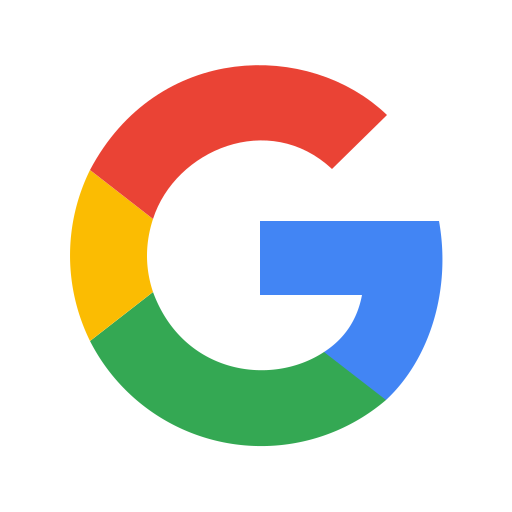

Fixtures
Use the calendar icon to subscribe to the selected team's fixture in your calendar app. If a popup doesn't come up to subscribe to it in your calendar app, and you don't use  Google Calendar, Outlook.com or Office 365, you will have to copy the link and subscribe to it manually in your calendar app.
Desktop users who need to manually subscribe can copy a calendar link by right clicking on the calendar icon and clicking "Copy Link". Mobile users can do the same by holding your finger down on the calendar icon and tapping "Copy link address" or something similar, these menus can vary by device/OS. Just make sure you subscribe using the link (do not download/upload the calendar), otherwise you won't receive future updates, like broadcast information or results as they become available.
These calendars are based on our official WAFL fixtures, but are provided here openly and collaboratively by members of our community, for ease of use (in your own calendar app). All files/code for the calendars and this website can be viewed and contributed to on Github using the link at the bottom of this page.